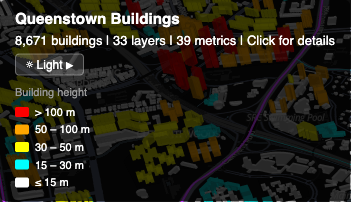
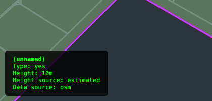
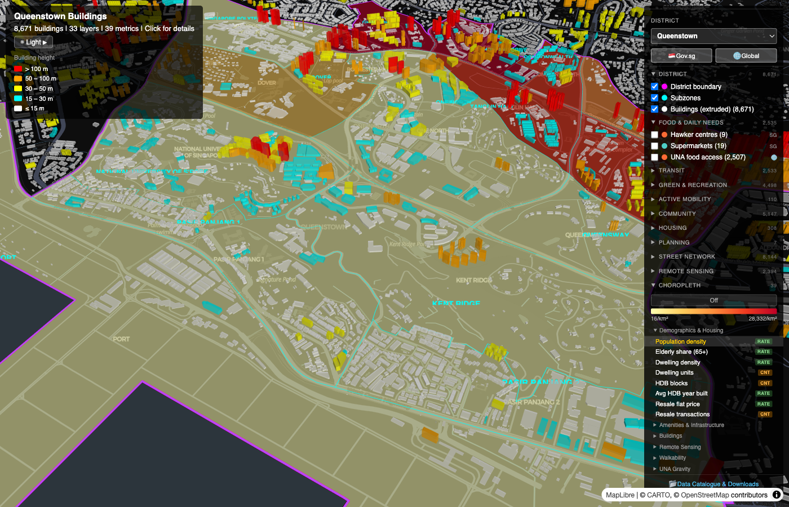
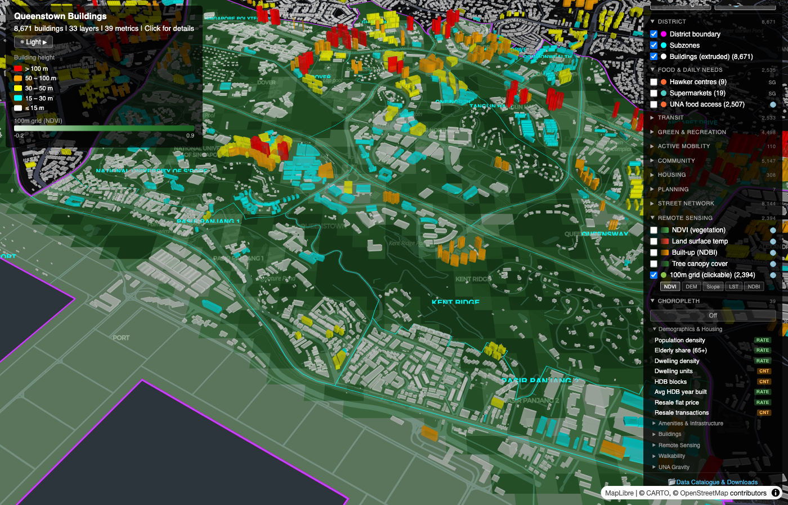

A guide to the deck.gl map viewer for the Singapore District Liveability Study. The viewer lets you explore 29 data layers and 33 choropleth metrics across five districts.
Open viewer-deckgl.html in a modern browser (Chrome, Firefox, Safari, or Edge). The viewer loads with:
Default view: Queenstown district with dark basemap, extruded buildings, boundary, and subzone outlines.
| Action | Mouse | Trackpad / Touch |
|---|---|---|
| Pan | Left-click + drag | One-finger drag |
| Zoom | Scroll wheel | Pinch in/out |
| Rotate | Right-click + drag left/right | Two-finger rotate gesture, or Ctrl + drag left/right |
| Tilt / pitch | Right-click + drag up/down | Two-finger drag up/down, or Ctrl + drag up/down |
| Reset north | Click the compass icon (bottom-right) to snap back to north-up | |
A dropdown at the top of the layer panel lets you switch between five districts:
| District | Subzones | Buildings |
|---|---|---|
| Queenstown | 15 | 8,671 |
| Marymount (Bishan) | 3 | 3,766 |
| Outram | 4 | 1,589 |
| Bukit Merah | 17 | 1,874 |
| Newton | 6 | 759 |
Switching districts:

After switching to Marymount (Bishan): the camera flies to the new district and reloads default layers.
Click the basemap button in the top-left info panel to cycle through three CARTO styles:
| Style | Description |
|---|---|
| Dark (default) | Dark grey background. Best contrast for coloured layers and buildings. |
| Light | White background with grey labels. Good for screenshots and print. |
| Voyager | Coloured map with road and place labels. Most context for orientation. |
All basemaps are served by CARTO and require no API token.
The info panel (top-left) with the basemap button, title, and building height legend.
The layer panel is in the top-right corner. Click the “Layers” header to collapse or expand it.
The layer panel with 10 collapsible groups, district selector at top, and provenance filter buttons.

Expanded group showing checkboxes, feature counts, source badges, and colour swatches.
All 29 toggleable layers across 10 groups:
| Layer | Type | Source | Description |
|---|---|---|---|
| District boundary | Line | — | Magenta outline of the planning area |
| Subzones | Line + labels | — | Cyan subzone outlines with centroid labels |
| Buildings (extruded) | 3D polygon | — | OSM building footprints extruded by height, colour-coded |
| Other districts | Line + labels | — | Gray outlines of the 4 other study districts with name labels. Click to see district name. On by default. |
| Layer | Type | Source | Description |
|---|---|---|---|
| Hawker centres | Point | SG | Government-managed food courts |
| Supermarkets | Point | SG | Supermarket locations |
| Layer | Type | Source | Description |
|---|---|---|---|
| MRT exits | Point | SG | Mass Rapid Transit station exit locations |
| Layer | Type | Source | Description |
|---|---|---|---|
| Parks | Point | SG | Park locations |
| Park facilities | Point | SG | Facilities within parks (shelters, playgrounds, etc.) |
| Park connectors | Line | SG | Pedestrian/cycling paths connecting parks |
| Parks & nature reserves | Polygon | SG | NParks park and nature reserve boundaries |
| ABC Waters | Polygon | SG | Active Beautiful Clean Waters programme areas |
| NParks tracks | Line | SG | Walking/hiking tracks inside parks |
| Layer | Type | Source | Description |
|---|---|---|---|
| Cycling paths | Line | SG | Designated cycling path network |
| Layer | Type | Source | Description |
|---|---|---|---|
| Community clubs | Point | SG | Community club locations |
| Gyms | Point | SG | Gym/fitness centre locations |
| Pre-schools | Point | SG | Pre-school locations |
| CHAS clinics | Point | SG | Community Health Assist Scheme clinic locations |
| Sport facilities | Point | SG | Sport facility locations |
| Layer | Type | Source | Description |
|---|---|---|---|
| HDB blocks | Point | Global | HDB public housing blocks coloured by construction era: pre-1980, 1980–1999, 2000+ |
| Layer | Type | Source | Description |
|---|---|---|---|
| Height control zones | Polygon + labels | SG | URA storey-limit zones with text labels (e.g. “36 sty”) |
| Layer | Type | Source | Description |
|---|---|---|---|
| Street network | Line | Global | OSMnx drive network coloured by betweenness centrality |
| Intersection density grid | Grid (100m) | Global | Walk-network intersection density per cell (blue ramp) |
| Walkability grid | Grid (100m) | Global | BEH-NWI walkability score per cell (green ramp) |
| Layer | Type | Source | Description |
|---|---|---|---|
| NDVI (vegetation) | Raster | Global | Satellite vegetation index overlay |
| Land surface temp | Raster | Global | Thermal satellite imagery |
| Built-up (NDBI) | Raster | Global | Built-up surface index overlay |
| Tree canopy cover | Raster | Global | Canopy cover percentage overlay |
| 100m grid (clickable) | Grid (100m) | Global | Clickable grid with 5 colour modes (see RS Grid Modes) |
A collapsible “Subzone Filter” section appears in the layer panel after the provenance filter bar. It lets you spatially filter layers to specific subzones within the current district.
Click any visible feature on the map to open a popup in the bottom-left corner. The information shown depends on the layer type:
| Layer | Popup content |
|---|---|
| Buildings | Name, building type, height (m), storeys, height source, data source, year completed (if HDB) |
| HDB blocks | Block name/number, street, year completed, dwelling units, use flags (residential/commercial/market) |
| RS grid | Cell ID, NDVI, NDBI, LST (°C), canopy %, elevation (m), slope (°) |
| Walkability grid | Cell ID, intersection density, transit access, destination access, walkability, slope-adjusted variants |
| Street network | Road name, length (m), betweenness centrality, road type |
| Height control | Max storeys, zone type |
| Choropleth | Subzone name, active metric value |
| Other features | Feature name |
Click on an empty area of the map to dismiss the popup.
The bottom-left popup after clicking a building, showing type, height, and data source.
The choropleth shades subzone polygons by a selected metric. It is found in the collapsible “Choropleth” section at the bottom of the layer panel.
The choropleth legend (gradient bar with min/max values) appears between the Off button and the sub-categories.
Each metric has a type badge:
| Sub-category | Metrics | Examples |
|---|---|---|
| Demographics & Housing | 8 | Population density, elderly share, resale flat price |
| Amenities & Infrastructure | 9 | Amenity density, MRT stations, green space coverage |
| Buildings | 3 | Total buildings, avg height, max height |
| Remote Sensing | 6 | NDVI, NDBI, LST, canopy cover, GHSL height, elevation |
| Walkability | 7 | BEH-NWI walkability, slope-adjusted walkability, intersection density |
Data is sourced from the per-district {district}-subzone-summary.geojson file, which is lazy-loaded on first use and cached.
The Choropleth section with Demographics & Housing expanded and Population density metric active.
Subzones shaded by population density using the YlOrRd colour ramp.
The RS grid layer (“100m grid (clickable)” in the Remote Sensing group) supports 5 colour modes. Small toggle buttons appear below the grid checkbox when the Remote Sensing group is expanded.
| Mode | Field | Colour ramp | Description |
|---|---|---|---|
| NDVI (default) | ndvi | Light green → dark green | Vegetation greenness (−1 to +1) |
| DEM | dem_m | Blue → red | Elevation in metres above sea level (SRTM 30m) |
| Slope | slope_deg | Yellow → dark green | Terrain steepness in degrees |
| LST | lst_c | Blue → red | Land surface temperature in °C |
| NDBI | ndbi | Green → red | Built-up intensity (−1 to +1) |
The legend in the info panel updates dynamically to show the current field name, gradient, and min/max values computed from the data. Click any grid cell to see all 6 properties (NDVI, NDBI, LST, canopy %, DEM, slope) regardless of the active colour mode.
The RS grid in NDVI mode. Toggle buttons (NDVI / DEM / Slope / LST / NDBI) appear below the grid checkbox.
The viewer automatically saves your current view state into the browser’s URL bar. You can share exact map configurations with others by copying the URL.
Click the Copy link button in the info panel (top-left, below the basemap toggle) to copy the current URL to your clipboard. The button briefly shows “Copied!” as confirmation. Paste the link in a message, email, or document to share your exact view.
The URL only includes parameters that differ from the defaults, keeping shared links short. The following state is captured:
| Parameter | What it controls | Example |
|---|---|---|
d | Selected district (omitted for Queenstown, the default) | d=bishan |
layers | Comma-separated list of visible layer IDs (omitted when default set) | layers=boundary,subzones,hawker |
sz | Comma-separated selected subzone names (omitted when all are selected) | sz=QUEENSWAY,TANGLIN%20HALT |
choro | Active choropleth metric key (omitted when choropleth is off) | choro=population_density |
rs | RS grid colour mode (omitted when default NDVI) | rs=lst |
base | Basemap index: 0 = Dark, 1 = Light, 2 = Voyager (omitted when Dark) | base=2 |
experimental | Enables UNA gravity accessibility layers (hidden by default) | experimental=true |
The info panel (top-left) shows contextual legends:
| Issue | Solution |
|---|---|
| Stale or missing data | Hard-refresh the page (Ctrl+Shift+R or Cmd+Shift+R) to clear the browser cache. |
| Layer not loading | Check the browser console (F12) for warnings. Some layers have 0 features for certain districts and will fail gracefully. |
| Layers overlapping | Layers render in a fixed z-order: rasters at the bottom, then choropleth, polygons, grids, lines, boundaries, buildings, points, HDB, and gravity on top. Toggle off layers you don’t need. |
| Choropleth not visible | The choropleth renders below buildings. Disable the Buildings layer, or tilt the map to see subzone shading beneath the 3D buildings. |
| Slow initial load | Default layers (boundary, subzones, buildings) are loaded immediately. All other layers are lazy-loaded only when toggled on to minimise initial load time. |
| District switch resets layers | This is by design. Switching districts clears all cached data and resets checkboxes to prevent stale cross-district data. |
Singapore District Liveability Study — Map Viewer User Manual